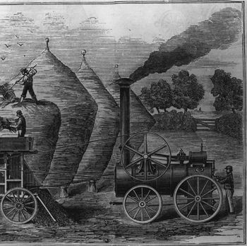
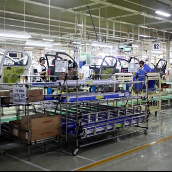
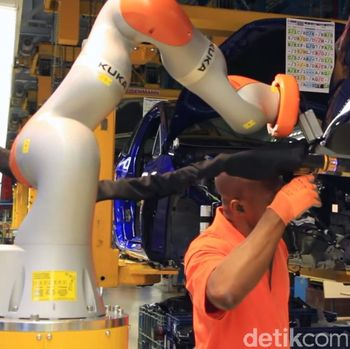
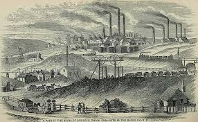

Terjadi perubahan besar di bidang pertanian, manufaktur, transportasi dan teknologi. Penemuan mesin uap oleh James Watt membuat pekerjaan tidak lagi bergantung pada tenaga manusia dan hewan. Produksi meningkat dan transportasi menjadi lebih cepat dengan tenaga mesin.

Ditandai dengan penemuan listrik dan produksi massal. Lini produksi mempermudah pembuatan barang dalam jumlah besar sehingga biaya lebih murah. Perkembangan transportasi mempermudah distribusi barang.

Menggunakan komputer dan otomatisasi. Teknologi digital mempercepat pekerjaan dan meningkatkan efisiensi. Mesin mulai dikontrol oleh sistem komputer.
Menggabungkan teknologi internet, AI, IoT dan machine learning. Semua perangkat saling terhubung sehingga pekerjaan lebih cepat dan praktis. Teknologi digital mempengaruhi hampir semua bidang kehidupan.
Revolusi Industri 1.0
Dimulai dengan mesin uap yang meningkatkan produksi dan mengurangi ketergantungan tenaga manusia.
Revolusi Industri 2.0
Ditandai listrik dan produksi massal yang membuat barang lebih murah dan mudah didistribusikan.
Revolusi Industri 3.0
Menggunakan komputer dan otomatisasi sehingga pekerjaan lebih cepat dan efisien.
Revolusi Industri 4.0
Menggabungkan internet, AI, IoT dan machine learning yang membuat aktivitas manusia lebih praktis.
